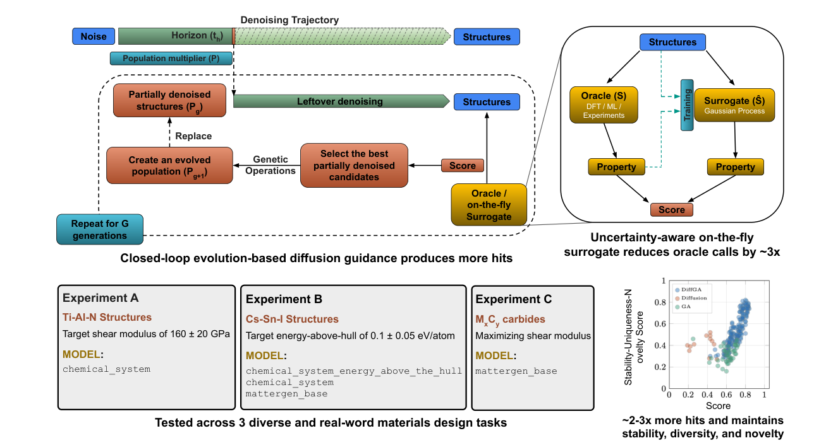
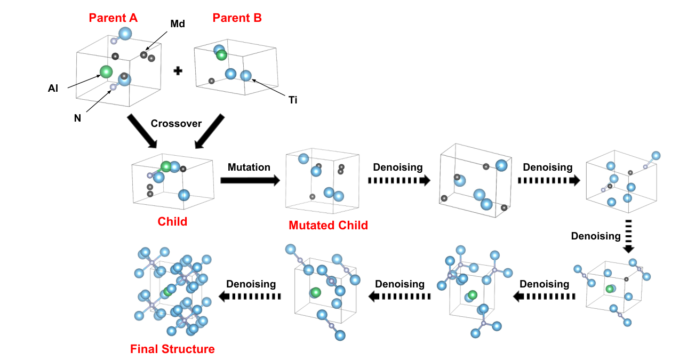
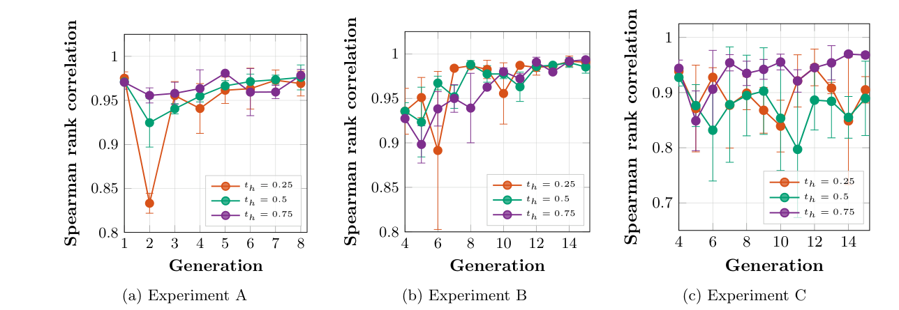
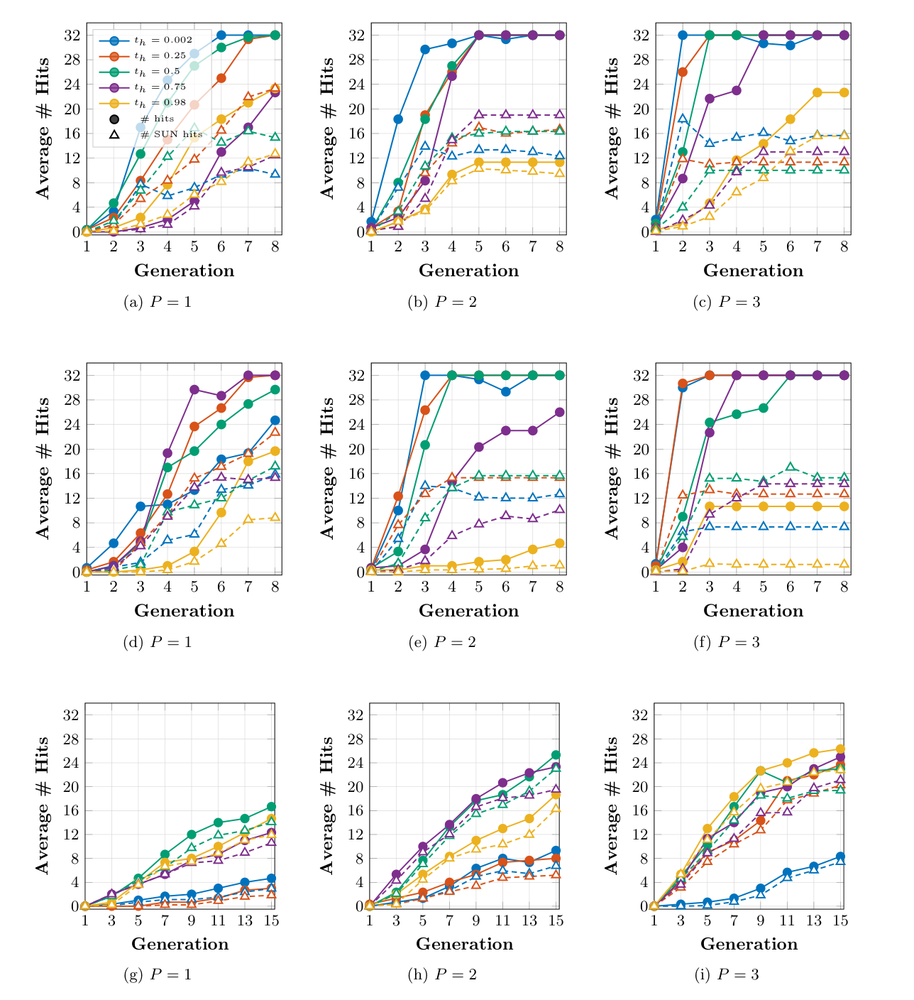
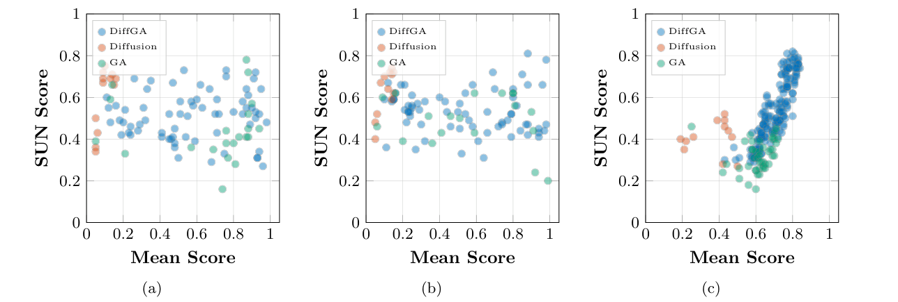
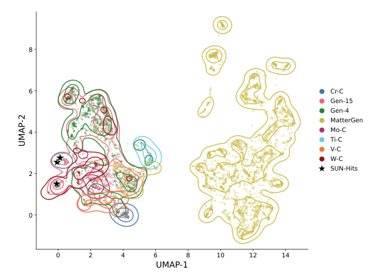
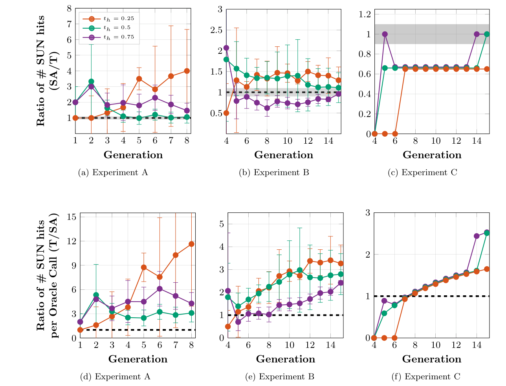
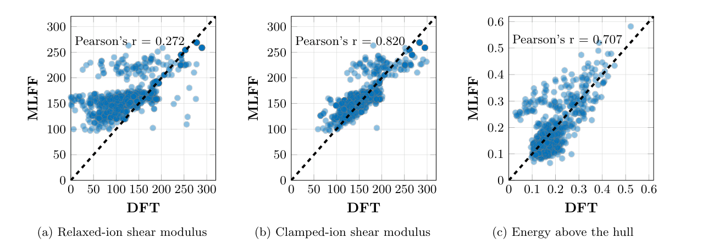

DiffGA：不重训晶体生成模型，怎样让它沿着新的材料目标搜索
论文原文 ↗原文：Shivang Agarwal、Rodrigo Wang、Kevin Ryczko、Aayush R. Singh，DiffGA: Steering Frozen Diffusion Models for Materials Design via Evolutionary Search，arXiv，2026年10月。官方页面｜原始 PDF
晶体生成模型已经能提出组成和结构合理的候选，但材料研究真正需要的是“朝着某个目标提出候选”：例如在 Ti–Al–N 体系中寻找剪切模量接近160 GPa的晶体，或在多种过渡金属碳化物中寻找尽可能高的剪切模量。剪切模量描述材料抵抗剪切变形的刚度，是硬质材料设计关心的力学性质。
困难在于，目标可能来自模拟、复杂程序或实验，未必能对生成模型求梯度；目标还会随研究问题变化。每换一个目标就重新收集大量标签、微调生成器，成本很高。遗传算法能直接使用这些黑箱反馈，却容易在交叉和变异后得到不合理结构，或围着少数高分结构反复搜索。
DiffGA 把两种能力接在一起：冻结 MatterGen 的模型参数，在晶体尚未完全生成时进行遗传选择和变异，再让扩散模型继续把它整理成晶体。 此外，搜索过程中产生的数据被用来训练一个轻量性质代理，减少后续昂贵的性质评估。

图1｜中间去噪状态经过完整生成和性质评价后，所得分数返回到进化环节；右侧是在线代理接替性质评价的支路。下方对应三个材料设计任务。
一、方法怎样做：改造生成途中的“半成品”
先从噪声生成半成品，性质则在完成结构上计算
MatterGen 是一个预训练晶体扩散模型：从带噪声的原子类型、位置和晶胞逐步去噪，最后得到周期晶体。DiffGA 在某个中间进度暂停，把此时的一批结构保存下来。作者称这一进度为 horizon time，记为 t_h；这里的“时间”表示生成进度，并非材料发生物理演化的时间。
以 Ti–Al–N 任务为例，作者使用已有的化学体系条件模型，让初始生成围绕 Ti、Al、N 展开。暂停后的结构仍含噪声，不能直接拿来计算力学性质。于是，对每个半成品继续完成剩余去噪，得到完整结构；先用 MatterSim 机器学习势进行几何优化，再用 MatTen 预测弹性张量并获得剪切模量。作者把这套返回目标性质的程序称为 oracle，即性质评价器。
剪切模量越接近160 GPa，候选得到的分数越高。分数再返回给产生该候选的中间状态。这样，选择依据是完整晶体的性质，真正接受遗传操作的对象则是对应的半成品。
遗传操作发生在中间状态，随后继续去噪
程序按分数保留优秀中间状态，同时保留前一代的优秀成员，再通过交叉和变异建立下一代。交叉使用切割和拼接，把两个父结构的部分内容组合起来；变异包括原子种类替换，并结合目标化学空间与电负性相似性控制替换方向。新半成品继续经过 MatterGen 的剩余去噪、结构优化和性质评价，然后进入下一轮选择。

图7｜两个父结构在同一去噪进度交叉，子结构变异后继续去噪，最终形成 Ti–Al–N 晶体。Md 是模型尚未确定原子类型时使用的噪声占位符。
关键在于，后续生成保留了预训练模型学到的晶体结构规律。进化环节负责把搜索推向目标性质，去噪环节负责继续形成合理结构；不需要为这项新目标更新 MatterGen 权重。每一代也不必把全部结构重新加噪回起点，而是持续演化保留下来的中间状态。
暂停进度决定两者的分工：接近去噪终点时，遗传操作之后只剩很少的模型整理，行为接近普通遗传算法；更早暂停，则给扩散模型更多继续组织结构的机会。论文同时比较了这些设置。
再用搜索自己的数据，训练一个省计算的性质代理
完整结构优化和性质计算需要对许多代候选重复进行。DiffGA 的第二个组成部分，是一边搜索、一边学会近似其中的性质评价。
每个候选优化后，程序从 MatterSim 中提取各原子的内部特征，取平均得到一个256维晶体描述向量。这里的特征是机器学习势已经学到的结构表示，不另训练晶体编码器。作者只训练一个高斯过程：一种能同时返回性质预测值和预测不确定性的回归模型，把向量映射到评价器计算的物理性质。评分函数随后再把预测性质转换成目标分数。
前期仍用原性质评价器积累标签。高斯过程至少获得150个样本、并在留出的一代候选上达到 Spearman 排序相关系数大于0.5后，才接替性质评价。排序相关系数关心模型能否把候选按性质排对顺序，正好对应遗传选择需要的信号。
接替之后，程序在“预测均值±两倍标准差”的区间内选择能够取得最好目标分数的性质值，用它排序候选。这让不确定但有希望的结构也有机会保留。每代再选出不确定性最高的30%候选，调用原评价器取得性质，补进训练集并更新高斯过程。因此，性质代理持续跟着搜索进入的新区域学习；结构生成和几何优化仍按原流程进行。

图8｜三个任务中，代理预测与原评价器的候选排序保持较高相关性；颜色表示不同的中间暂停进度。
二、找到了什么：三个任务分别检验什么能力
作者设置了三个由窄到宽的设计问题：在 Ti–Al–N 中把剪切模量控制在160±20 GPa；在 Cs–Sn–I 中把高于凸包的能量控制在0.10±0.05 eV/atom；从无条件生成器出发，在 Ti、V、Cr、Mo、W 各自与碳形成的二元碳化物中最大化剪切模量。
“高于凸包的能量”表示某结构相对同一组成下最有利分解组合的能量差，用来描述热力学稳定性。三个任务除了看性质是否命中，还统计 SUN 命中率：同时通过稳定性、结构去重、相对参考库的新颖性判定的成功候选比例。稳定性在统一的 MatterSim 评价流程中计算，结构匹配由 pymatgen 完成。
1. 把反馈放进生成过程，比独立多生成再挑选更有效
对照包括直接生成、调用相同次数性质评价器的大量独立生成后排序，以及只保留一个去噪步骤的遗传算法。这样可以区分收益究竟来自多算了候选，还是来自反馈改变了后续搜索。
| 任务与生成器 | 等评价次数的独立生成：平均 SUN 命中率 | 遗传算法 | DiffGA |
|---|---|---|---|
| Ti–Al–N，化学体系条件模型 | 8.18% | 8.58% | 9.55% |
| Cs–Sn–I，无条件模型 | 0.08% | 17.82% | 42.54% |
| 过渡金属碳化物，无条件模型 | 0 | 0.17% | 0.58% |
最明显的改善发生在原模型没有为任务提供专门条件时。Cs–Sn–I 使用无条件模型时，DiffGA 的平均 SUN 命中率达到42.54%，遗传算法为17.82%。即便使用已经带有化学体系和凸包能量条件的模型，DiffGA 仍把平均 SUN 命中率从等评价次数独立生成的1.73%提高到46.02%。
碳化物任务的成功区域更稀疏：命中要求剪切模量达到对应化学空间 Materials Project 最高值的95%以上。DiffGA 的平均 SUN 命中率约为遗传算法的3.4倍，最优设置为2.19%，遗传算法为0.52%。这表明在宽化学空间中，结构生成规律与目标反馈结合，能比单独变异更有效地找到兼顾性质与结构多样性的候选。

图2｜圆点实线是性质命中数，三角虚线是 SUN 命中数。三行依次采用性质与化学体系条件模型、化学体系条件模型、无条件模型；各列改变种群倍数。

图4｜Cs–Sn–I 任务中，不同搜索设置的性质平均分与 SUN 分数。无条件模型对应的右图尤其清楚：DiffGA 能同时提高目标分数与结构质量、多样性指标。
作者还把无条件生成样本、参考碳化物与进化后的候选，放进 MatterGen 自身学到的结构表示中共同比较。大量无条件样本分布较广；进化到第4代和第15代的候选，则逐渐集中到参考碳化物所在区域。这为“反馈怎样改变生成方向”提供了直观解释。

图3｜黄色是无条件生成样本，绿色与粉色分别是第4代和第15代候选。其他颜色代表参考碳化物，黑星是经 DFT 评价的高模量候选。
2. 在线代理保留主要搜索收益，提高每次性质评价的产出
代理加速实验采用每批128个候选、种群倍数1，并让加速流程与原流程从相同初始种群出发。平均 SUN 命中率在 Ti–Al–N 任务中由5.21%变为6.27%，在 Cs–Sn–I 中由26.74%变为28.21%，碳化物任务中则由0.60%变为0.43%。后者每批通常只有1—2个 SUN 命中，作者据此把两条流程的差异描述为统计上难以区分。
真正节省的是昂贵性质评价的调用：代理接替之后，每代只把30%高不确定候选交回原评价器。图中若干设置的单位性质评价所获 SUN 命中数提高超过3倍。这里的效率指性质评价调用的利用率，结构生成、几何优化和高斯过程更新继续进行。

图5｜上排比较加速与原流程的 SUN 命中数量，下排比较性质评价效率；接近或高于水平虚线的位置，表示保留命中数量或提高单位评价产出。
3. DFT 说明优化所得高分具体对应什么物理量
原子内部位置是否允许随形变继续松弛，会改变剪切模量。作者因此分别计算固定内部离子位置的“钳制离子模量”和允许离子松弛的模量。MatTen 与前者的 Pearson 相关系数为0.820，与后者为0.272；Cs–Sn–I 的凸包能量在统一使用 PBE 参考后，与 DFT 的相关系数为0.707。这个比较把模型实际引导的性质与第一性原理物理量接了起来，也是摘要强调的结果之一。

图6｜左、中两图分别比较松弛离子和钳制离子剪切模量，右图比较 Cs–Sn–I 的凸包能量；横轴是 DFT，纵轴是机器学习评价结果。
对四个最高分碳化物候选进一步计算，WC 的 DFT 松弛离子剪切模量为289.58 GPa，三个 CrC 候选为242.57—254.15 GPa；它们在 DFT 优化后仍保持与原候选接近的结构。WC 的 r²SCAN 凸包能量为0.0164 eV/atom，三个 CrC 为0.1023—0.1255 eV/atom。这些具体结果表明，搜索确实进入了高刚度碳化物区域，同时显示性质预测与最终物理评价各自提供的信息。
三、值得关注的进展：把目标控制移到生成时，而不是反复重训
DiffGA 提供的是一种材料逆向设计的使用方式：已经训练好的晶体生成器负责结构规律，用户新指定的性质评价器负责搜索方向，两者通过中间状态上的进化循环协作。遇到新目标时，主要更换性质评价和评分规则；生成模型本身保持固定。
在线代理进一步利用一次搜索已经产生的数据和机器学习势的内部表示，把重复性质计算转化成持续学习的机会。两部分结合，使材料生成可以接入变化中的、无法直接求梯度的计算目标，并把预算集中到有希望又需要进一步评价的候选上。对于需要反复变换目标、评估流程复杂的材料探索，这比单次无条件生成再筛选更值得关注。
原始摘要完整中文翻译
让候选生成流程朝向用户定义的目标，是材料逆向设计的核心，但当目标是黑箱、不断变化或不可微时，这仍然十分困难。传统的模拟和实验所得到的性质，恰恰就处于这种情形。生成模型提供了一种有前景的解决方案，但要么必须为每个新目标重新训练或微调，需要大量带标签数据和可观的计算资源；要么依靠可微的分数引导，而这种引导对梯度噪声敏感，且对许多实际目标没有定义。我们提出 DiffGA，一个无需重新训练的框架，将进化搜索直接注入预训练扩散模型的采样轨迹，在任意黑箱评价器的反馈下演化部分去噪的中间状态。
搜索任务的成本往往由性质评价主导，因此，我们为 DiffGA 配备了一个在线贝叶斯代理，复用先进机器学习力场已经学到的表示。搜索过程中，以力场自身的图嵌入为输入拟合高斯过程；当它证明能够对未见过的一代候选进行排序后，就在考虑不确定性的采集规则下替代昂贵的性质评价步骤，以几乎不损失准确性的方式降低评价成本。
在使用冻结 MatterGen 骨干的三个晶体设计任务中，就由评价器判定的稳定、独特且新颖的命中率而言，DiffGA 优于仅扩散、计算量匹配、纯进化及微调的对照方法。我们并非旨在提出具体的新化合物，而是使用密度泛函理论量化机器学习力场评价器本身的保真度：结果表明，它在一些关键情形中是忠实的代理，而在另一些情形中存在系统性偏差，从而具体界定了何时能够信赖代理驱动的生成式发现。在一个有代表性的样本中，DiffGA 的最高分候选经第一性原理重新评价后仍然是真实、物理合理的命中；代理加速的流程则以一小部分成本在端到端过程中保留了这种保真度。